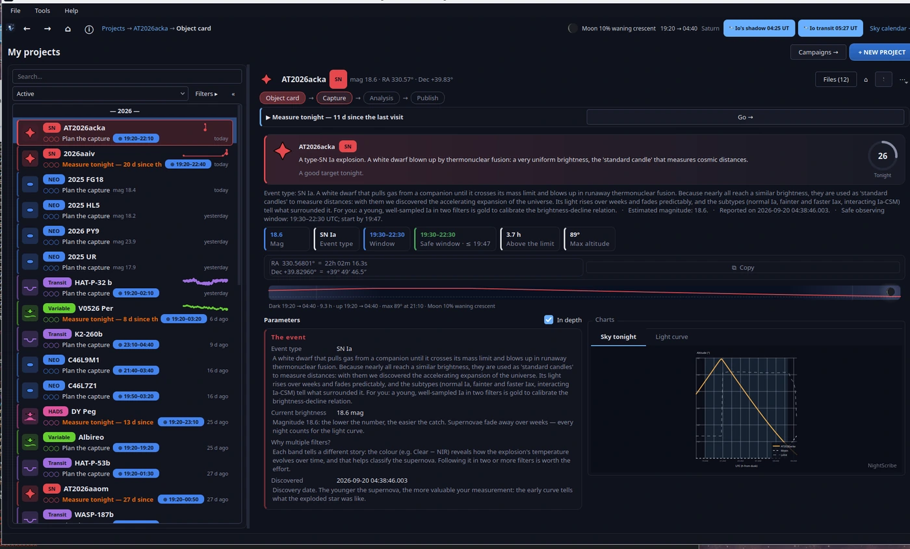
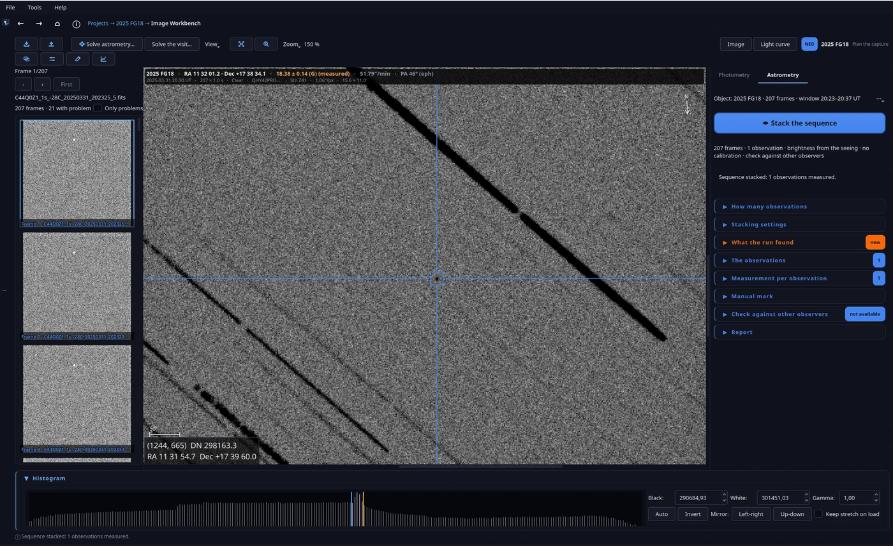
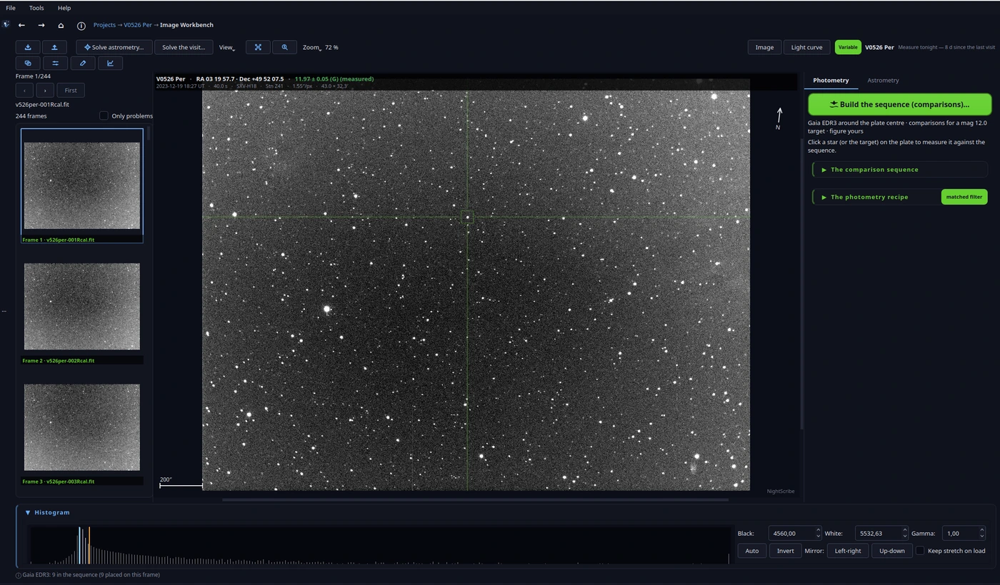

Planifica tu noche, entiende cada objeto, cuenta tu ciencia.
NightScribe es la herramienta de trabajo de un observatorio astronómico amateur: reúne en un solo sitio el ciclo completo de una observación, desde elegir qué mirar esta noche según tu cielo y tu equipo, hasta entender el objeto, capturar y reducir las imágenes y contar lo que has encontrado.
GPL v3, gratisLinux y WindowsEspañol e inglésSin cuenta ni telemetría
¿Qué es NightScribe?
Cuatro misiones, un solo bucle:
Planificar la noche: los mejores objetivos visibles desde tu observatorio, bajo tus restricciones reales, ordenados y explicados.
Entender cada objeto: parámetros orbitales y físicos traducidos a explicaciones precisas y divulgativas, en español e inglés.
Capturar y reducir: maneja tu montura y tu cámara por CCDciel, y calibra, apila y mide tus propias tomas: fotometría (variables, exoplanetas, supernovas) y astrometría de cuerpos menores lista para el MPC, sin salir de la ventana.
Contarlo: un borrador bilingüe (ES/EN) y los gráficos de la noche, redactados con los datos reales de tu sesión.
Y la pieza que las une: cada objetivo elegido se convierte en un proyecto, una entidad persistente con su propia carpeta, que te guía por Ficha → Captura → Análisis → Publicación sin volver a preguntarte nada que ya sepa (coordenadas, ventana, magnitud, plan de exposición). Y la app no se queda en el plan: maneja tu montura y tu cámara, y calibra, apila y mide tus propias tomas (astrometría, fotometría, períodos) sin salir de la ventana. Semanas después, el proyecto sigue ahí: revisitas, curva de luz, resultado final.
Qué puedes seguir
Ocho tipos de objetivos comparten la misma lista cada noche, y el Sol y el cielo ponen el contexto. Esto es lo que obtienes de cada uno:
Objetos cercanos a la Tierra (NEOs)
Asteroides y cometas en órbitas que pasarán cerca de la Tierra: los confirmados, con puntuación, prioridad, velocidad aparente, incertidumbre de posición y banderas (NEOCP, riesgo de impacto, radar…
Lista de NEOfixer específica de tu sitio + NEOCP (MPC); posiciones por NASA Horizons
Los descubrimientos más recientes, con el seguimiento completo: un blink de confirmación de tus FITS contra una referencia de PanSTARRS, la curva de luz frente a las plantillas típicas de cada tipo…
Lista de descubrimientos de Rochester Astronomy + una referencia de PanSTARRS (MAST) para el blink
Cometas visibles esta noche con su magnitud observada en vivo, su fecha de perihelio y sus banderas de actividad, para que sepas cómo va cada uno ahora, no el mes pasado.
Exoplanetas que cruzan su estrella esta noche vistos desde tu sitio, con la hora del tránsito, cuánto se desvía la hora observada de la predicha (O-C), si el tránsito entero cabe en tu noche, la…
ExoClock (programa de efemérides Ariel de la ESA) + Archivo de exoplanetas de la NASA; horas por NASA Horizons (HJD)
Aproximaciones próximas de ESA NEOCC (cómo pasará el visitante, más o menos qué tamaño, qué brillo en el paso más cercano) para cazar al rápido de la semana; y el canal editorial de AAVSO: alertas de…
ESA NEOCC + el canal editorial de AAVSO (alertas y campañas)
Variables delta Scuti de amplitud alta: pulsan tan rápido y tan fuerte que puedes seguirlas variar en una sola sesión; tu ejecución queda plegada por fase en el clásico diente de sierra.
Los miembros de tus campañas que ya toca medir por cadencia, estrellas con un evento en curso, estrellas cerca de un extremo predicho, y tus vigilias de largo (la erupción de T CrB, el…
AAVSO VSX + fotometría de la comunidad de AAVSO + una revisión de ZTF para las vigilias
Capturas del programa en marcha, con observaciones reales: no son maquetas.

La ficha del objeto: qué es, cómo se mueve, cuándo cazarlo

El track & stack: el asteroide se queda quieto mientras las estrellas se mueven

Fotometría: la secuencia de comparación y su receta
Qué necesitas
Obligatorio
Linux o Windows · Python 3.11+ (recomendado 3.12) o el instalador autónomo (sin Python) · ~500 MB de disco · conexión a internet para los datos en vivo (todo lo demás funciona offline)
Recomendado
Tu código de observatorio MPC (p. ej. Z41): el asistente inicial resuelve tus coordenadas automáticamente y desbloquea la lista de NEOs específica de tu sitio · tu fichero de horizonte local (.hrz de TheSkyX o simples pares «az alt») · la apertura de tu telescopio y el píxel/focal de tu cámara
Opcional
CCDciel en ejecución local, si quieres que la app maneje montura y cámara (es la primera integración con el observatorio; NINA y otros están previstos) · cuatro claves API gratuitas, cada una desbloquea un extra (reporte NEOfixer, resolución ciega Astrometry.net, bot de TNS, token AAVSO) · dos herramientas externas opcionales, Find_Orb (el chequeo contra otros observadores) y EXOTIC (la reducción de tránsitos); ver Integraciones opcionales
Sin cuentas, sin registros, sin telemetría: NightScribe corre en tu ordenador y solo habla con los servicios públicos de datos listados más abajo.
El asistente solo pide una cosa: tu observatorio. Escribe tu código MPC y tus coordenadas se rellenan desde la lista del MPC; o introduce nombre, latitud, longitud y altitud a mano.
La vista Esta noche (desde + NUEVO PROYECTO en la cabecera) calcula tu noche por sí sola: descarga las listas de objetivos, las filtra por tu sitio y tu equipo, y lo ordena todo.
Haz clic en cualquier objetivo y verás su ficha completa explicada. ¿Te gusta lo que ves? Un botón: Crear proyecto.
Cuando tengas un minuto, abre Herramientas → Configuración…: fichero de horizonte, magnitud límite, escala de placa de la cámara, valores de sesión. Todo trae valores por defecto sensatos; nada más es obligatorio.
Una noche completa (y las semanas siguientes)
Cómo se siente usar NightScribe, en cinco escenas:
Al final de la tarde. Abres la app y el panel de noche te recibe; un clic en + NUEVO PROYECTO y la noche ya está calculada: una lista de filas amplias, el mejor objetivo primero. Un chip en la cabecera avisa de que la Luna está al 87 %; otro anuncia un tránsito de sombra en Júpiter a las 23:12. La primera fila es un NEO sin confirmar con «inicio seguro hasta las 23:41; 2,5 h sobre tu horizonte» y su razón en una línea: «observado solo 2 días: cada noche cuenta».
Haces clic. La ficha te cuenta qué es en lenguaje llano, qué tamaño probable tiene, a qué familia pertenece su órbita (preliminar), a qué velocidad se mueve (5″/min) y, como conoce tu cámara, que tu exposición máxima sin traza es de 45 s. Pulsas Crear proyecto.
Planificar y capturar. Dimensionas la sesión: 40 tomas × 45 s, filtro Clear. La app confirma que cabe en la ventana segura. Exportas la efeméride para Cartes du Ciel y la secuencia para tu software de captura; o, con CCDciel conectado, envías el plan y arrancas la captura sin salir de la app.
Análisis. De vuelta a casa abres la visita en el editor. La app resuelve el frame de referencia, registra la secuencia y la apila siguiendo al objeto; busca el punto, barre la velocidad, mide cada observación dos veces (en su apilado y por frame) y contrasta el resultado con lo que han publicado otras estaciones. El reporte MPC sale en ADES o en 80 columnas con los instantes de mitad de exposición y las incertidumbres propagadas, listo para enviar. (También puedes medir en Tycho Tracker u otra herramienta y pegar las líneas: NightScribe las valida una a una antes de que salgan.)
Las semanas siguientes. El diario recuerda esa noche por sí solo. La supernova que confirmaste mantiene su propia curva de luz, y el panel te avisa cuando han pasado tres noches sin revisitarla. Si te apetece contarla, el borrador bilingüe ya está escrito con los datos reales de la sesión. Una tarde aparece un chip en la vista Esta noche: «R CrB está cayendo: tu vigilia».
Qué puedes hacer: en detalle
Planificar la noche (la vista Esta noche)
Una única respuesta ordenada a «¿qué puedo hacer esta noche?», con los ocho tipos de objetivos de la sección anterior mezclados en un mismo ranking.
Cada objetivo recibe un score unificado 0–100 construido desde cuatro familias ponderadas: prioridad científica (0–35), observabilidad desde tu sitio (0–30), urgencia (0–20) y gancho divulgativo (0–15); más retroalimentación de tu propio historial: lo observado pero nunca publicado recibe un empujón, lo publicado hace poco pierde novedad. La clasificación garantiza diversidad de tipos: una noche con un NEO, un cometa y un tránsito vale más que tres NEOs; y el mejor de cada tipo recibe un realce discreto. Cada elección llega con una frase de «por qué esta noche», en español e inglés.
El planificador respeta tus restricciones reales, y te avisa cuando una muerde:
Magnitud límite: política híbrida: corte duro para supernovas, cometas y tránsitos; aviso suave ⚠ mag>N para NEOs y PCCPs (sus predicciones de magnitud fallan a menudo: se marcan y atenúan, nunca se descartan en silencio).
Horizonte local: tu fichero .hrz de TheSkyX (o pares «az alt») más un margen de seguridad; una altitud mínima plana como respaldo. Con un fichero de horizonte válido, él manda.
Luna: aviso y penalización de score por separación e iluminación, nunca un filtro duro. Un icono de fase real, dibujado por geometría, vive en la cabecera.
Viabilidad de sesión: la ventana de oscuridad sobre tu horizonte debe cubrir la sesión entera; la tarjeta te dice «inicio seguro hasta las HH:MM».
Escala de placa: el píxel de tu cámara y tu focal fijan la exposición máxima sin traza para los objetos rápidos, calculada por objetivo.
Un filtro en la cabecera acota la noche a un solo tipo («hoy solo supernovas»), Configuración guarda una lista blanca permanente de tipos, y un tope por tipo evita que una fuente prolífica inunde la vista. Hasta tres chips de eventos del cielo (luna llena, una oposición, un tránsito de sombra en Júpiter…) viven en la cabecera y saltan directos al calendario del cielo.
Cazar NEOs y candidatos a cometa
El flujo que convierte un puntito en movimiento en una observación reportada:
La ficha muestra la velocidad aparente (″/min), tu exposición máxima sin traza, la ventana segura y, para los objetos sin confirmar, la órbita preliminar completa con sigmas, dibujada en un gráfico.
Exporta efemérides con paso configurable en los formatos que importa tu planetario (TheSkyX, Cartes du Ciel, CSV), validados con importaciones reales, y la secuencia de captura para NINA (JSON), CCDciel (.targets, validado contra una exportación real de CCDciel, con tomas de calibración incluidas) o un CSV genérico.
Con CCDciel conectado: Apuntar telescopio mueve a la posición recién calculada (Horizons interpolado al minuto, no el plan viejo), y el Goto astrométrico añade un ciclo de resolución de placa y corrección que absorbe el error de efeméride: la vía fiable para NEOCPs con grandes incertidumbres.
Las tomas vuelven a casa y la astrometría la hace la app: resuelve el frame de referencia, registra la secuencia, la apila siguiendo al objeto, busca el punto, barre la velocidad y mide cada observación dos veces (en su apilado y por frame), marcando cualquier desacuerdo. El resultado se contrasta con las observaciones que han publicado otras estaciones y el informe MPC se genera en ADES PSV o en 80 columnas, con el tipo de instrumento de tu cámara, listo para enviar.
También puedes medir en tu herramienta habitual (Tycho Tracker u otra) y pegar la astrometría en la visita: NightScribe valida cada línea (80 columnas o ADES PSV, tu código MPC, la designación) antes de que salga.
La animación de movimiento es la prueba de fuego, ahora reproducida en el editor: los apilados de tus observaciones centrados en el objeto, las estrellas arrastrándose mientras el asteroide se queda quieto. Si se queda quieto en todos los paneles, la detección es sólida.
Confirmar y seguir supernovas
Blink de confirmación: importa tu FITS resultado (objetivo y coordenadas ya están en el contexto del proyecto) y hazlo parpadear contra una referencia PanSTARRS DR1 g pedida con el centro, la escala de píxel y la rotación exactos de tu imagen: alineadas por construcción (DSS2-rojo toma el relevo al sur de −30°). Si tu FITS no tiene solución astrométrica, Astrometry.net la resuelve (clave gratuita). Exporta: GIF animado, MP4 H.264 y un PNG antes/después, con la marca de agua de tu observatorio y zoom opcional sobre el transitorio.
Seguimiento multi-noche: un proyecto de supernova vive semanas o meses. Cada visita registra el apilado final por filtro y tu fotometría con la mínima fricción: entrada rápida (solo la magnitud), pegado tolerante (AstroImageJ, Tycho, CSV) o importación de fichero. La curva de luz dibuja tus puntos frente a las plantillas típicas de cada tipo (Ia, II-P/L, Ib/c, SLSN, kilonova), la app calcula un análisis de campaña indicativo con veredicto, una animación de la evolución muestra el decaimiento, una copia FITS anotada porta los metadatos, y un recordatorio de cadencia («3 noches desde tu última visita») aparece en la vista Esta noche cuando toca volver.
Contexto de referencia bajo demanda: los puntos ZTF vía ALeRCE aparecen como puntos grises de referencia bajo los tuyos, nunca mezclados con tus medidas.
Exporta tu fotometría como CSV o AAVSO EFF (el formato extendido de la AAVSO), con la fecha juliana heliocéntrica calculada en la app.
Atrapar tránsitos de exoplanetas
Pensado para que cualquiera se atreva a capturar su primer tránsito:
La selección lidera con las dos decisiones reales: «el tránsito entero cabe en tu noche, baselines incluidos» y «detectable con tu apertura» (la estimación de telescopio mínimo de ExoClock frente a la tuya, como veredicto en palabras).
La tarjeta te dice «empieza a capturar a las HH:MM UTC», el tránsito más la baseline fuera de tránsito a ambos lados, y una línea de tiempo visual muestra de un vistazo noche, horizonte, ventana de captura e hitos.
Exposición sugerida y cadencia máxima (para resolver el ingress), con el overhead de lectura explícito, y un aviso cuando la baseline no cabe. Una checklist pre-vuelo persistente de cinco pasos acompaña la captura.
La reducción se delega en EXOTIC (el pipeline de ciencia ciudadana de NASA/JPL), pero la app lo orquesta: escribe el inits.json de la visita, lo ejecuta por ti en su entorno y importa su curva de luz y sus parámetros al proyecto; y guía el envío final a ExoClock o a la AAVSO Exoplanet Database.
Estrellas variables, HADS, campañas y vigilias
Sesiones HADS: no hay fase conocida a la que apuntar; la recomendación es una captura continua de 2× el periodo (cadencia ≤ P/12), y la puerta de listado exige que un ciclo completo quepa sobre tu horizonte. El catálogo es híbrido: la hoja de Google Sheets de P. Wils (actualizada a diario) fusionada con un snapshot empaquetado que también funciona offline. La leyenda de colores de la hoja alimenta el score: estrellas con cambios de periodo encontrados o posibles, estrellas nunca observadas y los huecos de cobertura del mes reciben bonus de urgencia. Tu sesión se pliega por fase en el clásico diente de sierra, en pantalla y en PNG.
Campañas: una campaña es el compromiso compartido de un grupo: objetivo científico, protocolo (cadencia, filtros, estrellas de comparación), URLs de reporte y datos. Una campaña, muchos proyectos asociados (borrar la campaña los libera, nunca los borra). Un miembro toca cuando su última sesión tiene cadence_nights noches y aterriza en la vista Esta noche automáticamente; también aterriza cuando se detecta un evento o se acerca un extremo predicho. La vista Campañas es la sala de guerra: «Está pasando ahora» con ⚡ eventos, ⏳ extremos por llegar y 👁 vigilias, tarjetas de salud por campaña (miembros × cadencia × eventos), y frases completas en lenguaje llano.
Vigilias: tu lista de vigilancia permanente, vigilia de erupción de T CrB, vigilia de caída de R CrB, una estrella por línea, editable en Configuración. Cada vigilia se chequea contra la última magnitud ZTF frente a su basal (caché propia de 12 h); para las estrellas más brillantes que la saturación de ZTF, lee la fotometría comunitaria de la AAVSO con tu token.
Canal AAVSO: alertas editoriales del foro de la AAVSO y las campañas de observación activas, con el nombre de la estrella validado contra el VSX antes de mostrarse. Una señal sobre una estrella que ya es proyecto se suma a las razones de ese proyecto, jamás una fila duplicada.
El motor de variables: predicciones de extremos del VSX con fechas julianas heliocéntricas, un asesor de eventos ante saltos de magnitud (umbral configurable) y vistas plegadas por época para las periódicas.
El Sol y el calendario del cielo
Desde el menú Herramientas:
El Sol ahora: los últimos canales de NASA SDO (corona a 193/304/171 Å, manchas, magnetograma), el mapa de regiones activas de NOAA y los índices (número de manchas, flujo de radio F10.7, Kp, la fulguración más fuerte de la semana), con un panel PNG con marca de agua y un borrador bilingüe de «el cielo hoy». Una línea de «impacto en tu noche» lo conecta con la observación: una Luna brillante perjudica a los objetos débiles, un Kp alto puede significar auroras.
Calendario del cielo: hoy + 60 días, calculado 100 % en local (sin red): fases lunares verdaderas, perigeo y apogeo, conjunciones Luna-planeta y planeta-planeta, oposiciones y máximas elongaciones (como cruces de longitud eclíptica), eclipses probables por geometría de conos de sombra, etiquetados con honestidad como probables, y lluvias de meteoros. Validado contra astropy y almanaques publicados.
Las lunas de Júpiter esta semana: tránsitos de los galileanos y de sus sombras sobre el disco, filtrados para tu sitio (Júpiter arriba y de noche), con calidad de planificación y la etiqueta «±10 min» siempre visible (validado contra 22 ventanas de JPL Horizons; peor caso 9,6 min).
Manejar tu observatorio (CCDciel)
El paso Captura de cada proyecto habla con tu CCDciel local por JSON-RPC, solo mientras CCDciel está realmente en ejecución: estado de un vistazo (versión, temperatura del CCD, seguimiento, movimiento), Apuntar telescopio (slew rápido a la posición recién calculada de un objetivo en movimiento), Goto astrométrico (slew, captura, resolución de placas y corrección) y captura en vivo (prepara el plan guardado del proyecto y arranca la secuencia).
CCDciel es la primera integración directa con el observatorio; NINA y otros están en la hoja de ruta. Mientras tanto, la exportación de secuencias como fichero ya cubre NINA (JSON), el propio CCDciel y CSV genérico.
Reducir y medir en la app (el editor)
Todo lo que produjo la noche se abre en un solo banco de trabajo, el editor FITS unificado: la placa con su histograma y su estirado, una banda que dice lo que la placa misma sabe (posición, magnitud, fecha, exposición, equipo, estación, escala) y, colgando de cada visita, las tomas que volvieron. El trabajo ocurre en pestañas, y cada cifra que muestra viene explicada donde aparece.
Fotometría. Las estrellas de comparación se proponen junto al objetivo (nunca las más brillantes del campo: saturan) y la placa se mide con una receta calibrada (apertura o filtro adaptado, cielo, término de color, el catálogo sobre el que se apoya el punto cero). En una secuencia completa, el motor de serie mide un punto por toma, con el cero atado por una comparada en cada frame, el conjunto de comparadas vetando un valor atípico, la apertura óptima por noche y un detrend multinoche honesto; de ahí sale la curva de luz, y se exporta como CSV o AAVSO EFF, o directamente a ExoClock.
Período y fase. Lomb-Scargle (con media flotante) y PDM, la ventana espectral, la probabilidad de falsa alarma por bootstrap, cuántos ciclos cubren realmente los datos y la curva plegada noche a noche: un período se afirma con su evidencia, no como un número suelto.
Calibración. Una biblioteca de masters (dark/bias y flat) indexada por cámara, ganancia, temperatura, exposición y filtro, y una receta declarativa: el flat se normaliza, un dark ya lleva el bias y un dark sin coincidencia exacta de exposición no se escala. Cuando la biblioteca no tiene flat para el filtro, se construye uno con las propias tomas (si la secuencia tiene dithering) y la ejecución lo dice. Una estrella que toca la saturación o la linealidad no entra en el punto cero.
Astrometría (track & stack). La secuencia se convierte en observaciones MPC: se resuelve el frame de referencia, se registran las tomas (rotación pequeña incluida), se apila la secuencia siguiendo al objeto para concentrar su luz mientras las estrellas dejan traza, se detecta el punto y se barre la velocidad; cada observación se apila aparte y se mide dos veces (en su apilado y por frame, con el desacuerdo marcado). El resultado se contrasta con las observaciones que publicaron otras estaciones (Find_Orb, leave-one-out) y el informe se genera en ADES PSV o en 80 columnas, con los instantes de mitad de exposición, las incertidumbres propagadas y el tipo de instrumento de tu cámara. Por debajo de la puerta de detección hay modo manual (marcar el objeto a ojo sobre el apilado de toda la secuencia) y la animación reproduce las observaciones en el editor para ver el asteroide quieto mientras las estrellas se arrastran.
Blink y anotación. Tu FITS parpadeado contra una referencia PanSTARRS DR1 g pedida con la geometría exacta de tu imagen (GIF animado, MP4 H.264, PNG antes/después) y una copia anotada compatible con AIJ con la posición del objeto escrita en la cabecera.
Las herramientas externas conservan su sitio: lo que produce la app son ficheros FITS, ADES y AAVSO estándar, así que Tycho Tracker, AstroImageJ, EXOTIC o tus propios scripts siguen exactamente donde ella lo deja.
Recordarlo todo: diario y atención
Diario de observación (menú Herramientas): tu diario se escribe solo: proyectos creados y cerrados, sesiones registradas, ficheros producidos, puntos fotométricos, actividad de campañas; agrupado por noche de observación (de mediodía a mediodía local, el día del astrónomo), filtrable por tipo y buscable. Doble clic para volver al proyecto.
Necesita tu atención: la app habla primero. La portada de Proyectos lista las 3–5 cosas que piden acción: un miembro de campaña que toca esta noche, una supernova que pide revisita, una observación nunca publicada; cada una con su razón en palabras llanas y un botón que aterriza exactamente donde se actúa. Calculado en local, sin red.
Tu actividad realimenta el planificador: el motor de sugerencias sabe qué observaste o publicaste, y la lista de Esta noche lo refleja.
Entender cualquier objeto
Herramientas → Explorar objeto… (o clic en cualquier objetivo): identidad y datos físicos cruzados desde JPL SBDB, Horizons y CAD, SIMBAD, TNS y el NASA Exoplanet Archive, presentados como una tarjeta de visita:
Una frase gancho y bullets divulgativos, en español e inglés.
Una tabla de parámetros donde cada fila está explicada en lenguaje llano: familia orbital, MOID (la mínima distancia a la que la órbita se acerca jamás a la de la Tierra), tamaño estimado desde la magnitud absoluta, próxima aproximación, fecha de descubrimiento… Multilínea, nada cortado.
Gráficos: la órbita (animada por fecha, con lecturas al pasar el ratón), el cielo nocturno con tu silueta de horizonte y la ventana segura sombreada, el campo del survey, la curva de luz. En la app son gráficos vectoriales vivos (zoom, pan, hover); los mismos motores generan los PNG.
Chips de captura: magnitud actual, velocidad aparente, exposición máxima sin traza, ventana y horas sobre el horizonte; más coordenadas copiables (decimales y sexagesimales) con su época.
Contarlo al mundo
El último paso de cada proyecto es contarlo, si te apetece: borradores bilingües (ES/EN) y un tuit redactados con los datos reales de la sesión (fecha, N×t, filtro), más el inventario de gráficos ya generados: órbita, cielo con tu horizonte, campo del survey, curva de luz frente a plantillas, línea de tiempo del tránsito, panel del Sol, blink y antes/después de la supernova, rastro de movimiento del NEO. Copias, pegas, listo.
De dónde salen los datos
Cada fuente externa, qué te aporta, con qué frescura, y si necesita clave. Toda la red pasa por una caché SQLite con TTL por fuente (la columna «refresco»): las consultas repetidas son instantáneas y gratuitas para el servicio. Si una fuente cae, el resto de la app nunca se rompe; consulta Ayuda → Fuentes de datos para ver el estado en vivo de cada una.
Fuentes de planificación (alimentan Esta noche):
Fuente
Qué te aporta
Refresco
¿Clave?
NEOfixer (U. Arizona)
Lista de NEOs de tu sitio: score, prioridad, coste, magnitud, velocidad, incertidumbre, indicadores NEOCP/impacto/radar/NHATS; órbitas preliminares con sigmas de los sin confirmar
12 h (órbitas 1,5 h)
No (solo para el reporte comunitario opcional)
MPC (PCCP)
Posibles cometas pendientes de confirmación, con comet-score
6 h
No
COBS
Magnitudes cometarias en vivo, perihelio, actividad
Transitorios y galaxias anfitrionas (espejo de Harvard como respaldo)
7 d
No
TNS
Posiciones de transitorios frescos, días antes de que SIMBAD los ingiera
6 h
No (solo para imágenes de descubrimiento)
NASA Exoplanet Archive
Periodo, radio, masa del planeta, estrella anfitriona
7 d
No
VizieR (CDS)
Campos estelares para las secuencias de comparación y las referencias astrométricas (Gaia EDR3, APASS DR9, VSX)
30 d
No
MPC Observations API
Lo que otras estaciones han publicado del objeto, para el chequeo antes de enviar
6 h
No
ALeRCE / ZTF
Contexto de referencia de curvas de luz
30 d
No
Sol y entorno:
Fuente
Qué te aporta
Refresco
¿Clave?
NOAA SWPC
Número de manchas, F10.7, Kp, regiones activas, flujo de rayos X
1 h
No
SILSO
Series de manchas y contexto del ciclo
24 h
No
NASA SDO
Últimas imágenes de corona y magnetograma (dominio público)
1 h
No
Imágenes:
Fuente
Qué te aporta
Refresco
¿Clave?
DESI Legacy Survey / hips2fits del CDS
Recortes en color y campos de referencia PanSTARRS DR1 g / DSS2, pedidos con la geometría exacta de tu imagen
30 d
No
Astrometry.net
Resolución ciega cuando tu FITS no tiene WCS
30 d por fichero
Sí (clave gratuita)
Calculado en local, sin red en absoluto: posiciones del Sol, la Luna y los planetas (algoritmos de Schlyter, precisión de arcminutos), propagación de cuerpos menores (Kepler desde los elementos SBDB), instantes de tránsito, fechas julianas heliocéntricas, todo el calendario del cielo de 60 días y los fenómenos de las lunas de Júpiter. Y la reducción misma: el registro, el apilado, la medida astrométrica y fotométrica, la serie, la búsqueda de período y la curva de luz son aritmética sobre tus propios píxeles, sin ningún servicio de por medio. Las imágenes van acreditadas (NASA/SDO, PanSTARRS, DSS); las webs externas (SolarMonitor, ETD, NEOfixer, TNS…) se abren en tu navegador, nunca incrustadas.
Integraciones opcionales
Todo lo siguiente es opcional; cada pieza que falta degrada con elegancia y te lo dice. Se configuran en Herramientas → Configuración → Integraciones.
Integración
Qué desbloquea
CCDciel (local, host/puerto)
El paso Captura de cada proyecto: estado, apuntar telescopio, goto astrométrico, preparar el plan y captura en vivo. Solo con CCDciel en ejecución. Primera integración con el observatorio; NINA y otros están previstos
Clave API de NEOfixer
Reportar will_observe / observed de vuelta para la coordinación comunitaria
Clave de Astrometry.net (gratuita)
Resolución ciega de FITS sin WCS en el blink
Credenciales de bot TNS
Imágenes de descubrimiento dentro de la app (respetando la licencia de cada survey)
Token API de AAVSO
Fotometría comunitaria para las vigilias de estrellas brillantes
Código de observador AAVSO
Se rellena en las exportaciones fotométricas y en el handoff a EXOTIC
Find_Orb (binario externo)
El chequeo de tu medida astrométrica contra las observaciones que publicaron otras estaciones, antes del informe MPC. Sin él el chequeo no está disponible, y la app lo dice en vez de fingirlo
EXOTIC (Python 3.10 o anterior, externo)
La reducción de tránsitos: la app escribe el handoff, ejecuta EXOTIC por ti e importa su curva de luz y sus parámetros al proyecto. Sin él el handoff sigue siendo tuyo para lanzarlo a mano
Tus datos son tuyos
Todo lo que NightScribe sabe vive en una base de datos SQLite local en el directorio de datos de tu usuario: la caché HTTP, tus proyectos, sesiones, fotometría, campañas y ajustes. Cada proyecto tiene su carpeta contenedora (planes, secuencias, informes, gráficos, posts) bajo una raíz que eliges tú y puedes cambiar más adelante. Sin cuentas, sin nube, sin telemetría. Desinstala y borra la carpeta: no queda nada en ningún otro sitio.
Inicio rápido y CLI
python3 -m venv --system-site-packages .venv
.venv/bin/pip install -r requirements.txt
.venv/bin/python -m nightscribe gui # aplicación de escritorio
.venv/bin/python -m nightscribe tonight # mejores objetivos de esta noche (CLI)
Todo lo que hace la GUI tiene su contrapartida en línea de comandos (--help en cada uno para más detalles):
Comando
Qué hace
gui
aplicación de escritorio
tonight
mejores objetivos de esta noche (--fecha YYYY-MM-DD, --top N)
explore <objeto>
ficha explicada de un objeto en el terminal
post <objeto>
borradores bilingües + tuit (--png añade los gráficos)
solar
estado del Sol (--png genera el panel)
blink <nombre> <fits>
blink de supernova contra PanSTARRS (--video, --post, --zoom, --efecto blink/fade…)
sequence <objeto>
secuencia fotométrica + carta de comparación (--mag, --fov, --comps, --catalog gaia/apass, --fits como fondo)
inyección y recuperación: se añaden fuentes sintéticas de brillo conocido a una copia de tus tomas y se miden de vuelta, para decir hasta dónde llega de verdad el pipeline
Consulta INSTALL.es.md para instrucciones completas por sistema operativo, el paquete pip y el instalador autónomo, y CONTRIBUTING.es.md para colaborar.
Documentación
La guía de usuario (English) recorre el ciclo completo, del primer arranque al reporte MPC, en capítulos cortos con el «por qué» de cada opción. También viaja dentro de la app (Ayuda → Documentación técnica) y se publica como web: <https://irydeo.github.io/nightscribe/> (Ayuda → Guía de usuario (web)).
Diseño, arquitectura, fuentes de datos, scoring, flujos de trabajo y todas las decisiones (ADRs) están en docs/, en español e inglés.